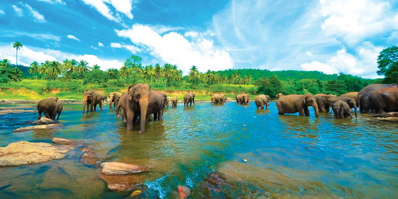
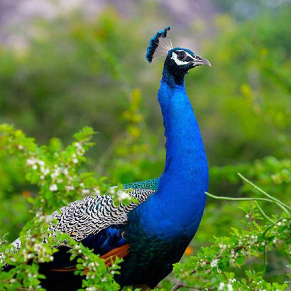
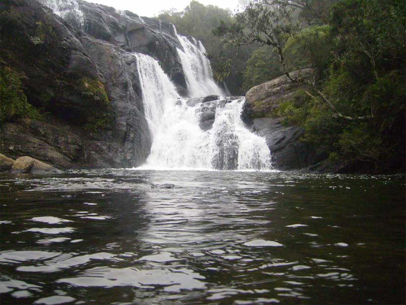
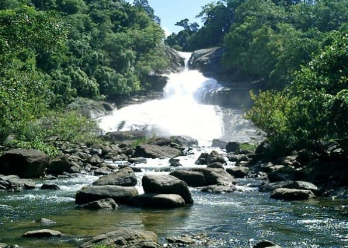
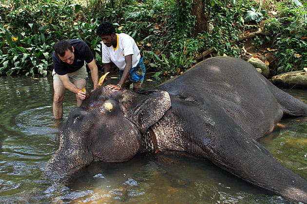
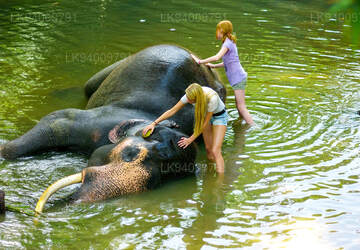

The Sabaragamuwa Province, is one of the nine provinces of Sri Lanka, the first level administrative division of the country.
The provinces have existed since the 19th century but did not have any legal status until 1987 when the 13th Amendment to the
Constitution of Sri Lanka established provincial councils. The Sabaragamuwa Province contains two districts: Ratnapura and Kegalle.
t is named after its former indigenous inhabitants, namely the Sabara, an indic term for hunter-gatherer tribes, a term seldom used
in ancient Sri Lanka. Sabaragamuwa University is in Belihuloya.
1. Pinnawala Elephant Orphanage
Pinnawala Elephant Orphanage is an orphanage, nursery and captive breeding ground for wild Asian elephants located at Pinnawala village,
13 km (8.1 mi) northeast of Kegalle town in Sabaragamuwa Province of Sri Lanka. Pinnawala has the largest herd of captive elephants in the
world. In 2011, there were 96 elephants, including 43 males and 68 females from 3 generations, living in Pinnawala.
The orphanage was founded to care and protect the many orphaned unweaned wild elephants found wandering in and near the forests of Sri Lanka.
It was established in 1975 by the Sri Lanka Department of Wildlife Conservation (DWC).
On 31 August 2021, a 25 year old elephant named Surangi gave birth to twin male baby elephants at the orphanage. It also marked the first
instance of the birth of twin elephants in Sri Lanka after a gap of 80 years since 1941.
The Pinnawala Elephant Orphanage was established by the Sri Lankan Department of Wildlife Conservation in 1975 for feeding and providing
care and sanctuary to orphaned baby elephants that were found in the wild.

The orphanage was located at the Wilpattu National Park, then shifted to the tourist complex at Bentota and then to the Dehiwala Zoo.
From the Zoo it was shifted to Pinnawala village on a 25-acre (10 ha) coconut plantation adjacent to the Maha Oya River.
The primary residential care area is on the east side of Highway B199, Rambukkana Road. The main site also has some restaurants and
refreshment stands, and management buildings including sleeping sheds and veterinary facilities.
At the time it was settled, the orphanage had five baby elephants which formed its nucleus. The addition of orphans continued till
1995 when the Elephant Transit Home (ETH) adjoining Udawalawe National Park was created by the DWC. Since then, orphaned babies have been
taken to the ETH and addition to the Pinnawala herd has been mostly through births occurring there.
2. Udawalawe Nationalpark

Udawalawe National Park is a national park on the boundary of Sabaragamuwa and Uva Provinces in Sri Lanka. The park was created to
provide a sanctuary for wild animals displaced by the construction of the Udawalawe Reservoir on the Walawe River, as well as to
protect the catchment of the reservoir. The reserve covers 30,821 hectares (119.00 sq mi) of land area and was established on 30
June 1972.
Before the designation of the national park, the area was used for shifting cultivation (chena farming). The farmers were gradually
removed once the national park was declared. The park is 165 kilometres (103 mi) from Colombo. Udawalawe is an important habitat for
water birds and Sri Lankan elephants. It is a popular tourist destination and the third-most visited park in the country.
Hopea cordifolia, Memecylon petiolatum, Erythroxylon zeylanicum, and Jasminum angustifolium are endemic floral species recorded from
the park.Hopea cordifolia is found along the river along with Terminalia arjuna. Panicum maximum and Imperata cylindrica are important
food sources for the elephants.
The habitat surrounding at the reservoir includes marshes, the Walawe river and its tributaries, forests and grasslands. Dead trees
standing in the reservoir are visual reminders of the extent of forest cover before the construction of the Udawalawe Dam.
Green algae, including Pediastrum and Scenedesmus spp., and blue green algae species such as Microsystis, occur in the reservoir.
Areas of open grassland are abundant as a result of former chena farming practices. There is a plantation of teak beyond the
southern boundary, below the dam, which was planted before the declaration of the park.
Species recorded from the park include 94 plants, 21 fish, 12 amphibians, 33 reptiles, 184 birds (33 of which are migratory),
and 43 mammals. Additionally 135 species of butterflies are among the invertebrates found in Udawalawe
Udawalawe is an important habitat for Sri Lankan elephants, which are relatively hard to see in its open habitats. Many elephants
are attracted to the park because of the Udawalawe reservoir,with a herd of about 250 believed to be permanently resident.
3. Bopath Waterfall

Bopath Ella is a waterfall situated in the Ratnapura District of Sri Lanka. It has a shape very similar to the leaf of the Sacred fig
or "Bo" tree, which has earned it this name. The waterfall is a major tourist attraction in the country. Local myths say that it is
haunted and that it hides a treasure trove.
The name "Bopath Ella" has been given to the waterfall because of its shape. The water flows through a narrow gap in the rocks and then
widens, forming the shape of a leaf of a "Bo"[1] tree which is the Sinhalese name for sacred fig (Ficus religiosa). "Path" means leaves
of a tree and "Ella" means waterfall. Virgin forests with a rich biodiversity surround the waterfall.
Bopath Ella is 30 metres (98 ft) high. It is formed from the Kuru Ganga, which is a tributary of the Kalu Ganga. Its mean rate of flow is
6 square metres (65 sq ft) per second, and its catchment area receives an average rainfall of 5,080 millimetres (200 in) annually.
Water from the falls is used for paddy cultivation. Bopath Ella is also the most comprehensively studied waterfall in the country.

The waterfall has been used for bathing by ancient rulers of the country when they visited the nearby Maha Saman Devale in Ratnapura.
It is also believed that the deity Saman has appeared here.
There are several myths associated with Bopath Ella. One such belief is that a local village girl jumped into the waterfall and killed
herself when her lover abandoned her. He was reputedly a pilgrim from Colombo who failed to return to the pregnant girl. The girl's
ghost is said to haunt the waterfall, and appears as a blue light. Another popular belief among the locals is that there is an ancient
treasure trove hidden in the waterfall, and that one thousand human sacrifices are required to get it.
Bopath Ella is located in a village named Agalwatte in Kuruwita in the Ratnapura District of Sri Lanka.
Bopath Ella is a major tourist attraction in Sri Lanka, since it is not far from the capital, Colombo, and is easily accessible. T
here have been unsuccessful attempts to use the waterfall to generate hydroelectricity.The path to the waterfall is lined with a number
of shops and stalls, and it is somewhat polluted because of this commercialization.
4. Millennium Elephant Foundation

Millennium Elephant Foundation (MEF) is an organization and charity set up to rescue and care for captive Asian elephants in Sri Lanka.
he foundation is situated on a 15-acre estate by the name of Samaragiri, which is located 10 km (6.2 mi) northwest of Kegalle, within
the Sabaragamuwa Province of Sri Lanka. As of 2019 there are 10 elephants that either permanently or temporarily reside at the sanctuary.
These elephants are taken care of by 13 local mahouts and a number of foreign volunteers.
The foundation is funded predominantly by tourists and volunteer fees. This money is used to develop and improve conditions for the
elephants at MEF, as well as run an education program for farmers and their families in Habarana.
Millennium Elephant Foundation, which has been home to the Samarasinghe family and their elephants for many generations, was first
opened to the public as the Club Concept Elephant Bath in 1979 by Sam Samarasinghe (1931-1991), a dedicated animal lover.

After Samarasinghe's death in August 1999, MEF was founded in his memory with the assistance of the World Society for the Protection
of Animals (Now known as World Animal Protection), and unveiled as a sanctuary possessing proper caretaking facilities and medical
services for captive elephants. MEF strives to improve the care and treatment of Sri Lankan elephants whilst increasing awareness
about the crippling conditions many of them face throughout the country. The foundation remains the only certified non-profit
organization working with captive elephants in Sri Lanka today.
Tourists can observe and ride the elephants at MEF as well as assist with their daily washing in the Kuda Oya River that runs through
the grounds. The funds generated from both visitors and volunteers is used to maintain the elephants well-being, and to enable the care
nd rescue of more captive elephants. MEF ensures that it strictly abides by the guidelines set by the Sri Lanka Tourism Development
Authority.
Since its inception, MEF has cared for more than 80 elephants.
As of 2014, there are nine elephants, spanning in age from 8 to 52 years, under the care of the sanctuary. Pooja, one of the
resident elephants, was the first elephant in the country to be born in captivity. MEF also runs the Footsteps Elephant Consultancy,
the only mahout training program to be recognized and accredited by the Sri Lankan Department of Wildlife.
 Pinnawala Elephant Orphanage is an orphanage, nursery and captive breeding ground for wild Asian elephants located at Pinnawala village,
13 km (8.1 mi) northeast of Kegalle town in Sabaragamuwa Province of Sri Lanka. Pinnawala has the largest herd of captive elephants in the
world. In 2011, there were 96 elephants, including 43 males and 68 females from 3 generations, living in Pinnawala.
Pinnawala Elephant Orphanage is an orphanage, nursery and captive breeding ground for wild Asian elephants located at Pinnawala village,
13 km (8.1 mi) northeast of Kegalle town in Sabaragamuwa Province of Sri Lanka. Pinnawala has the largest herd of captive elephants in the
world. In 2011, there were 96 elephants, including 43 males and 68 females from 3 generations, living in Pinnawala.